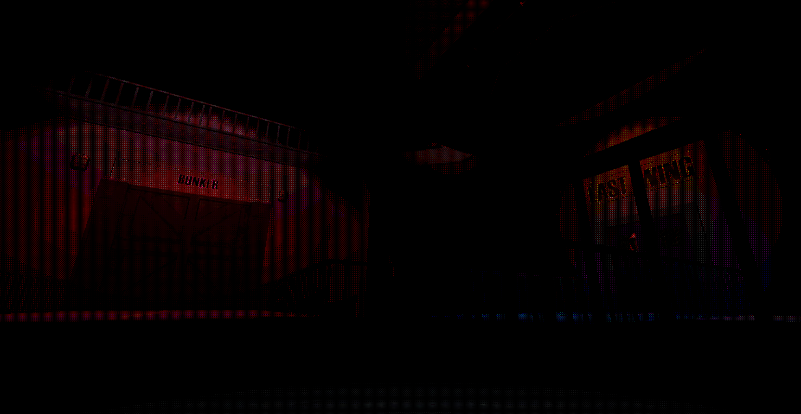

|
|
"YOU CALLED, WE ANSWERED! BUT... MAYBE WE SHOULDN'T HAVE..." |
|
|
"YOU CALLED, WE ANSWERED! BUT... MAYBE WE SHOULDN'T HAVE..." |
As I have not had the courses required to be aware of all of the best practices when working with Shaders, I am aware that there may be many flaws with the approach I took for this. Most of my knowledge on the matter is self taught, and I refused to rely on AI or Tutorials, opting instead for the use of online documentation and pre-existing knowledge.

This shader is used for all of the lighting in our game.
We start with an Unlit shader.
We then recreate the world lighting ourselves, getting the required infos directly from Unity's lighting engine.
Once we have access to shadows and lights, we can use the Dithering node to create this pixelated grid pattern between lights and shadows.
We can also use the Step node to limit the amount of colors and to literally reduce the amount of steps between fully bright areas and fully dark areas, creating 'patches' of colors to replace gradiants.
We can then simply sample the base texture and multiply it with the lighting that was just made, as our game does not use other types of maps (e.g. Normals, Specular, etc).

This effect is a sub-element of the main shader used for our materials.
Any of our materials can be given a speed, intensity and noise scale for this 'wiggling' effect.
However, we have only used this effect on Flesh, Guts, Sinew and other bodily materials in the context of our game.
It works by simply generating a Noise texture, using in game time to offset its UV, and using that paired with world positions to offset the position of each vertice on the model being rendered.

This vignette effect uses a lot of the same elements as the flesh 'wiggling' effect just above.
It uses a Generated Noise Texture for the wavy look, and fades itself to 0 alpha towards the center of the screen. To achieve that, we just use the 'Screen Position' node and use the distance between each pixel and the center as an intensity value.
This effect is used to indicate the player's health, as well as the player's exhaustion while running.
Thank you for reading all the way through!
Click the link below to go back to the HOME Page.
|
PHONE: 0493 18 36 61 |
PAGE SOURCE |